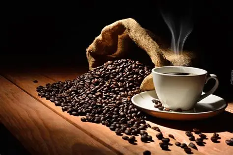

Oferta
Kawiarnia w sercu miasta z pyszną kawą i wspaniałą atmosferą!
| Napój | Cena |
|---|---|
| Kawa Latte | 18 zł |
| Capuccina Balerina | 15 zł |
| Espresso | 4 zł |
| Espresso tonic | 14 zł |
| Przelew | 9 zł |
| Cortado | 16 zł |
| matcha | 40 zł |
| Decaf | 6 zł |
Jeśli zawitasz w naszych skromnych progach, z pewnością musicie wypróbować naszych pysznych napojów.
Do każdego napoju w gratisie zawsze dajemy ciasteczko! zapraszamy!
----------------------------------------------------------------------------------------------------------------------------------------------
